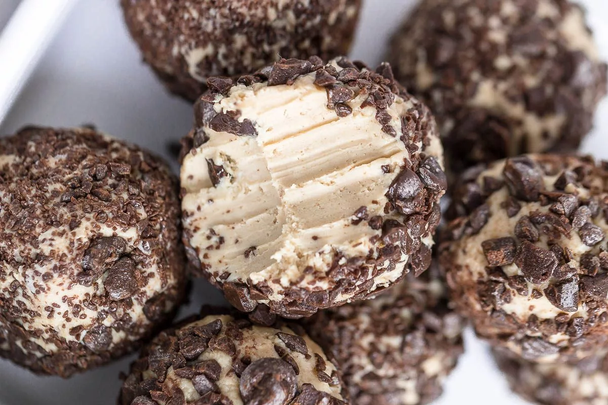

Create deliciousness with 4 simple ingredients!
This dessert is extremely easy to make as well as simple.
Using a sugar substitute is a great way to cut back on
calories without compromising taste. Continue reading
to learn more.....
Ingredients
- 1 block of cream cheese (16 oz.)
- Brown Sugar
- Peanut Butter
- Chocolate Chips (Dark Chocolate)
Steps
- Mix 3 tablespoons of Peanut Butter with the block of cream cheese in a large bowl
- Add 2 tablespoons of white or brown sugar (or sugar substitute) to the cheese mixture
- Mix in a decent amount of chocolate chips
- Chill in the freezer for around 15-30 minutes
- Let sit in the refrigerator until time to serve